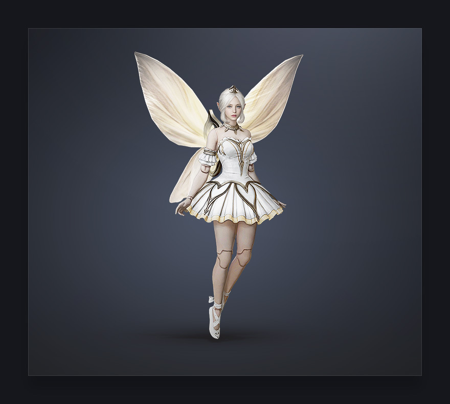
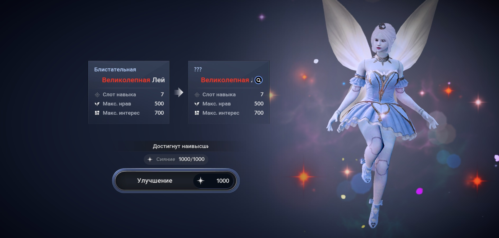
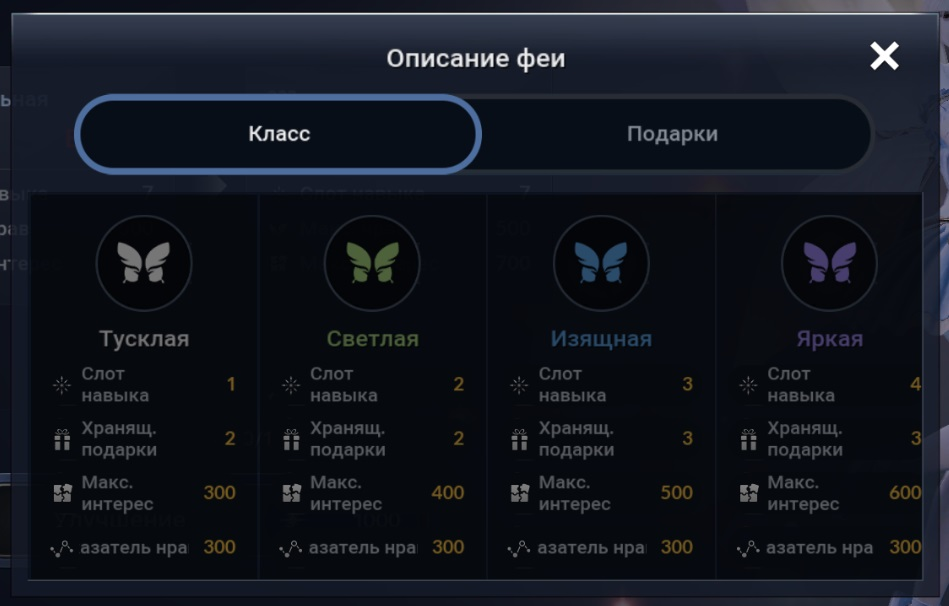

Фея - это еще один ваш спутник, как и Черный дух. Она - маленькое магическое существо, очень любопытное и общительное и бесячая порой до ужаса. У феи свой характер и предпочтения. Взаимодействуйте с вашей феей, развивая ее характеристики, получайте награды и БС за развитие, а также полезные навыки.

феяСодержание:
Характер
## Характер Фея может изменить характер при Улучшении. Всего бывает 16 характеров феи: Зеленые характеры: Т1 - **Вежливая** Т2 - **Приветливая** Т3 - **Ласковая** Т4 - **Чуткая** Т5 - **Добрая** Красные характеры: Т1 - **Энергичная** Т2 - **Задорная** (раньше называлась Озорная) Т3 - **Веселая** Т4 - **Беззаботная** Т5 - **Оптимистичная** Синие характеры: Т1 - **Серьезная** Т2 - **Сдержанная** Т3 - **Осторожная** Т4 - **Надежная** Т5 - **Мудрая** Т6 - **Блистательная** - получается при абсолютном максимуме характеристик, когда вам уже некуда расти. При получении феи с Блистательным характером доступна функция окрашивания крыльев и волос. От характера зависят предпочтения и диалоги. Приоритеты прокачки характеристик влияют на то, какой характер получит фея: - Озорство + Забота = зеленые характеры - Находчивость + Смелость = красные характеры - Спокойствие + Честность = синие характеры Характер определяется **максимальной парой характеристик одного цвета** (если два максимума одинаковые, есть приоритет зелёная > красная > синяя). Цвет крыльев и волос феи все ещё определяется максимальной среди всех характеристик и может не совпадать с характером. Когда фея в состоянии Недовольной малютки вы сможете увидеть, какой характер она приобретет после возврата в нормальное состояние.

Грейд (класс)
## Грейд (класс) Феи бывают 7 грейдов: - Тусклая (белый грейд) - Светлая (зеленый грейд) - Изящная (синий грейд) - Яркая (фиолетовый грейд) - Сияющая (желтый грейд) - Ослепительная (оранжевый грейд) - Великолепная (красный грейд) Повышать грейд можно улучшая фею за очки сияния. Шанс успешного улучшения понижается с повышением грейда, но при каждом неудачном улучшении усиливается Благословение Тейи. Когда оно накопится, можно гарантированно улучшить фею. Грейд феи влияет на количество устанавливаемых навыков и лимит интереса. Просмотреть параметры каждого грейда можно нажав на лупу в меню улучшения феи.

Состояние
## Состояние У феи три состояния - Капустка, Лейла и Недовольная малютка. **Капусткой** фея появляется у вас впервые и после взросления в это состояние она не возвращается. У Капустки ограниченное меню действий и общения и свои уникальные разговоры. **Лейла** - взрослая фея. В этом состоянии ваша фея будет находиться большую часть времени. Здесь ей доступны все действия, а скорость набора сияния стандартная. Из этого состояния фею можно попытаться улучшить. **Недовольной малюткой** фея становится после неудачи улучшения. Ее облик меняется на Капустку, но уже прокачанные характеристики и грейд не понижаются. В этом состоянии у феи ускорен набор сияния. У этого состояния также уникальные разговоры и просьбы. При улучшении из этого состояния фея снова становится Лейлой, которой была до неудачи.